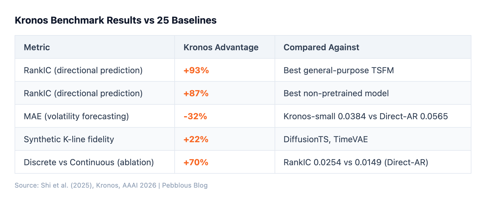
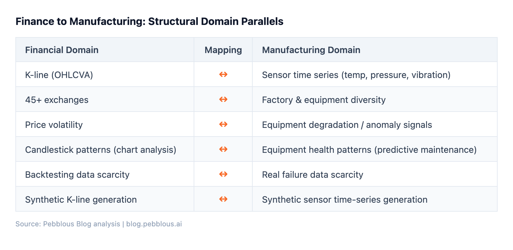

Google's TimesFM has 500 million parameters and was trained on 100 billion time points across weather, energy, traffic, and economics. When applied to financial data in a zero-shot setting, its R-squared was -2.80%. Worse than random.
Amazon's Chronos fared no better: R-squared of -1.37% on the same financial tasks. These are not bad models. They simply were not designed for financial data, and financial data has its own language.
This is the starting point for Kronos, a financial time-series foundation model developed at Tsinghua University and presented at AAAI 2026. Rather than treating candlestick data as generic numbers, Kronos treats it as domain-specific language — and the results are striking.
Large language models convert text into discrete tokens — word fragments mapped to integer indices in a vocabulary. Kronos does the same thing with financial candlesticks (K-lines).
Each K-line consists of six values: Open, High, Low, Close, Volume, and Amount (OHLCVA). Kronos compresses these six continuous values into a single discrete token using Binary Spherical Quantization (BSQ). A 3-layer Transformer autoencoder projects the OHLCVA vector into a latent space, then maps it onto 20 learned hyperplanes to produce a 20-bit binary code. This yields a codebook of 2^20 — roughly one million possible tokens.
The codebook is hierarchical. The upper 10 bits (coarse sub-token) capture the broad structure of price movement — direction, volume level. The lower 10 bits (fine sub-token) encode residual precision — exact positioning of highs and lows, turnover shifts. During prediction, Kronos generates the coarse sub-token first, then conditionally predicts the fine sub-token using cross-attention. This is analogous to how language models might first predict sentence structure, then fill in specific words.
Kronos was benchmarked against 25 baseline models across four categories: zero-shot TSFMs, full-shot trained models, econometric volatility models, and generative models. Key results:
Kronos ships as a family of four models:
Mini, Small, and Base are MIT-licensed on HuggingFace (NeoQuasar organization). The GitHub repository has accumulated 16,400 stars as of April 2026 — surpassing TimesFM (~15,600) and far exceeding Chronos (~4,800). The decision to keep Large behind institutional licensing reflects a familiar commercial open-source tension: build community with free models, monetize with the largest one.

The failure of general-purpose TSFMs on financial data is structural, not accidental. Four reasons emerge consistently from the literature:
Here is where the analysis gets uncomfortable. Kronos's BSQ codebook directly reflects the distribution of its training data. If that training data contains noise, outliers, or missing values, the corrupted distribution gets encoded into the codebook itself. Every downstream inference then uses contaminated representations.
The VQ literature has a name for this: Representation Collapse (arXiv:2411.16550). Noisy training data causes only a fraction of the codebook entries to be utilized — the rest become "dead codes." A vocabulary of one million tokens might effectively shrink to a few thousand. The model's representational capacity collapses from within.
Kronos applied rigorous quality filtering — removing illiquid assets, clipping Z-score outliers beyond [-5, 5]. This worked because financial exchange data is centralized and relatively clean. But what about domains where data is messier?
"Through 2026, organizations will abandon 60% of AI projects unsupported by AI-ready data." — Gartner, February 2026
The structural parallels between financial and manufacturing time series are surprisingly deep:

Yet no manufacturing equivalent of Kronos exists. Siemens announced its Industrial Foundation Model project at Hannover Messe 2025, and the ProcessFM framework proposed the first dedicated approach, but neither has achieved Kronos-level maturity. The bottleneck is not architecture — it is data. Manufacturing sensor data lives in silos across individual factories. Collecting 12 billion observations from 45 exchanges is fundamentally different from collecting the same from 45 factories.
The predictive maintenance market is projected at $10B-$18B by 2026 with a CAGR of 20-30%. The digital twin market is expected to grow from $36.19B (2025) to $180.28B (2030). The demand is there. The data infrastructure is not — yet.
Kronos demonstrates a paradigm shift in how data quality relates to model performance. In the general-purpose model era, data quality was a "nice to have." In the domain-specific foundation model era, data quality is a component of the model itself — literally encoded into the codebook.
This creates a concrete pipeline: raw domain data flows through quality diagnosis and cleansing (outlier detection, missing value handling, distribution validation), then through synthetic augmentation (generating rare scenarios to fill data gaps), before reaching domain-specific FM training. The upstream stages determine the downstream model's ceiling.
For organizations evaluating domain-specific foundation models — whether in finance, manufacturing, healthcare, or energy — the question is no longer "which architecture?" but "is my data ready?"